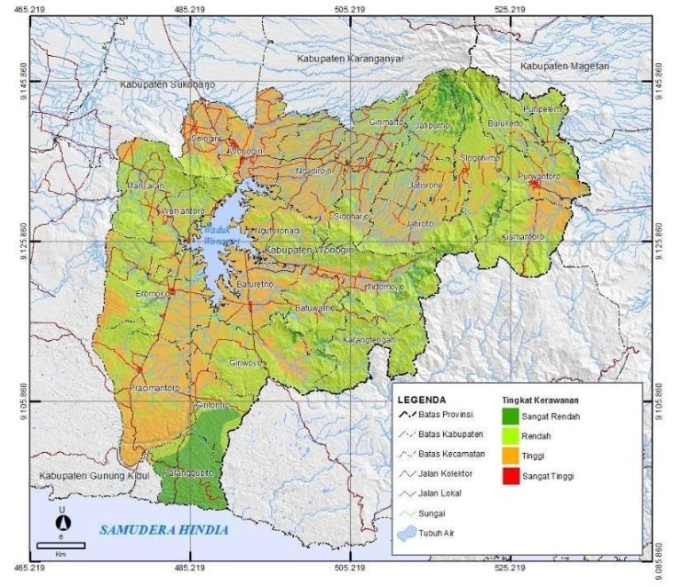
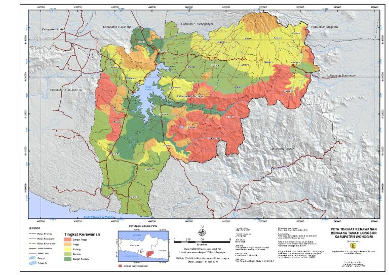

Cari Layanan Darurat
Instansi Layanan Darurat
Tidak ada layanan yang cocok.
Coba kata kunci lain seperti "ambulans", "polisi", atau "bencana".Selamat Datang di
Informasi & Akses Cepat Layanan Darurat Terintegrasi
Kecamatan Pracimantoro · Wonogiri
Pilih menu yang Anda butuhkan:
© 2026 PRACI SIAGA · Hak Cipta Dilindungi · TEGAR.S.A


Tidak ada layanan yang cocok.
Coba kata kunci lain seperti "ambulans", "polisi", atau "bencana".Klik atau geser penanda untuk menentukan alamat lokasi tepat

Pusat informasi layanan kepolisian & panduan kedaruratan masyarakat

SPKT bertugas memberikan pelayanan kepolisian secara terpadu terhadap laporan/pengaduan masyarakat, memberikan bantuan dan pertolongan, serta memberikan pelayanan informasi.
Sentra Pelayanan Kepolisian Terpadu (SPKT) siap melayani berbagai dokumen resmi dan perizinan masyarakat berikut:
Pilih salah satu tab di bawah untuk melihat alur tahapan secara runtut:
Masyarakat menyiapkan pengaduan, kronologis kejadian, data pendukung, serta identitas diri.
Pengaduan dapat disampaikan secara lisan melalui telepon/HP atau dengan datang langsung ke ruang SPKT.
Jika datang langsung ke ruang pelayanan SPKT, masyarakat melakukan:
Pengaduan diterima secara resmi oleh Ka Siaga SPKT / Piket Fungsi Siaga.
Petugas melakukan kajian awal atau gelar awal terhadap pokok materi serta bukti pengaduan.
Setelah kajian awal, petugas menetapkan putusan resmi mengenai bentuk tindak lanjut pengaduan.
Berdasarkan putusan kajian, pengaduan dapat ditindaklanjuti dengan salah satu opsi berikut:
Masyarakat korban / pelapor datang langsung ke Sentra Pelayanan Kepolisian Terpadu (SPKT).
Masyarakat mendapatkan pelayanan di Ruang Pelayanan Pengaduan yang meliputi:
Selanjutnya petugas melakukan pendalaman terhadap laporan dan kronologi peristiwa.
Berdasarkan hasil pendalaman, laporan disalurkan kepada satuan fungsi yang sesuai:
Untuk laporan yang ditangani oleh Satreskrim, Satresnarkoba, atau Sat Propam, dilakukan proses:
Laporan masuk ke tahap Pengawasan Penyidikan (Wassidik) untuk memastikan akuntabilitas proses hukum.
Setelah tahap Wassidik, berkas laporan disalurkan sesuai dengan kebutuhan penanganannya.
Jika laporan perlu diteruskan ke instansi terkait, Siaga SPKT menerbitkan surat pengantar ke:
Apabila laporan ditangani langsung oleh Piket Reskrim, proses meliputi:
Penyidik melanjutkan proses penyelidikan dan penyidikan formal berdasarkan hukum acara pidana.
Perkembangan hasil penyidikan disampaikan secara berkala kepada pelapor melalui SP2HP (Surat Pemberitahuan Perkembangan Hasil Penyidikan).
Panduan resmi pengajuan Surat Keterangan Catatan Kepolisian (SKCK) secara digital melalui aplikasi Super App Presisi Polri:
Selanjutnya silakan mendownload aplikasi, registrasi pilih menu melalui Google, setelah berhasil tambahkan nomor HP, lakukan verifikasi dilanjutkan klik SKCK dan mengisi identitas serta dokumen sesuai yang diminta.
Scan QR Code untuk Mengunduh Aplikasi
BARCODE APLIKASI SUPER APP POLRI
Bisa di HP Android maupun iOS
atau cari di Playstore / App Store:
"Super App Presisi Polri"

Pemadam Kebakaran (Damkar) merupakan layanan tanggap darurat yang bertugas menangani kebakaran, penyelamatan, serta berbagai kondisi darurat yang membahayakan keselamatan masyarakat. Selain memadamkan api, petugas Damkar juga memiliki peran dalam penyelamatan korban, penanganan bahan berbahaya, evakuasi hewan, hingga pencegahan kebakaran.
Layanan operasional tanggap darurat dan penyelamatan oleh petugas Pemadam Kebakaran:
Petugas Damkar bertugas menangani dan memadamkan kebakaran yang terjadi di berbagai lokasi, seperti rumah, gedung, perkantoran, kawasan industri, kendaraan, hutan, maupun lahan. Respons yang cepat dan tepat sangat penting untuk mencegah api meluas serta melindungi jiwa dan harta benda.
Damkar juga membantu menyelamatkan dan mengevakuasi korban dalam berbagai situasi darurat, seperti terjebak di dalam bangunan, lift, kendaraan, sumur, saluran air, maupun lokasi yang sulit dijangkau. Penyelamatan juga dapat dilakukan dalam kondisi bencana tertentu.
Petugas Damkar dapat menangani keadaan darurat yang melibatkan bahan berbahaya dan beracun (B3), seperti kebocoran gas atau tumpahan bahan kimia. Penanganan dilakukan dengan prosedur keselamatan untuk mengurangi risiko kebakaran, ledakan, kontaminasi, maupun keracunan.
Damkar juga dapat membantu masyarakat dalam menangani hewan berbahaya atau hewan yang terjebak, seperti ular, lebah, biawak, atau hewan lain yang berada di tempat yang membahayakan manusia maupun hewan tersebut.
Dalam kecelakaan lalu lintas, petugas Damkar dapat membantu mengevakuasi korban yang terjebak di dalam kendaraan menggunakan peralatan penyelamatan. Jika diperlukan, petugas juga memberikan pertolongan awal sambil menunggu atau berkoordinasi dengan layanan medis.
Di wilayah yang memiliki kewenangan dan layanan terkait, Damkar dapat melakukan pemeriksaan sistem proteksi kebakaran pada bangunan, fasilitas umum, tempat usaha, maupun kawasan tertentu untuk membantu memastikan kesiapan menghadapi risiko kebakaran.
Damkar turut melakukan sosialisasi dan edukasi kepada masyarakat mengenai penyebab kebakaran, langkah pencegahan, penggunaan peralatan keselamatan, serta tindakan yang harus dilakukan ketika terjadi kebakaran.
Damkar dapat memberikan pelatihan kepada masyarakat, relawan, sekolah, maupun lingkungan kerja mengenai penggunaan APAR, prosedur evakuasi, pertolongan awal, dan simulasi menghadapi keadaan darurat kebakaran.
Tetap tenang dan segera lakukan langkah-langkah darurat berikut:
Layanan: Pemadam Kebakaran (Damkar)
Jenis layanan: Kebakaran, penyelamatan, evakuasi, dan keadaan darurat terkait
Cakupan: Menyesuaikan wilayah dan kewenangan Damkar setempat
Nomor darurat: Gunakan nomor Damkar / layanan darurat resmi di wilayah Anda.

Puskesmas merupakan fasilitas pelayanan kesehatan tingkat pertama yang memberikan pelayanan kesehatan kepada masyarakat, mulai dari pemeriksaan dan pengobatan hingga pelayanan kesehatan ibu dan anak serta pencegahan penyakit.
Klik tombol di bawah untuk melihat informasi layanan masing-masing unit Puskesmas Pracimantoro:
Penyusunan tujuan, sasaran, strategi, dan program kegiatan untuk mengkoordinasikan seluruh pelayanan kesehatan primer sesuai siklus hidup, memastikan mutu, pengelolaan sumber daya (farmasi, jejaring), dan integrasi sistem informasi kesehatan (SATU SEHAT).
Mengurus administrasi umum, kepegawaian, keuangan, serta sistem informasi untuk mendukung seluruh kegiatan puskesmas agar berjalan efektif.
Merencanakan, mengembangkan, memotivasi, dan mengevaluasi kinerja seluruh staf. Mencakup: Perencanaan Tenaga, Pembagian Tugas, Pengembangan Kompetensi, Pemantauan & Evaluasi Kinerja, dan Administrasi Kepegawaian.
Pengelolaan pendapatan BLUD, perencanaan anggaran (RKA/DPA), pelaporan keuangan (BKU), biaya operasional, serta inventarisasi sarana-prasarana, kalibrasi alat kesehatan, dan pengelolaan BMHP.
Perencanaan, pemenuhan, pemeliharaan, serta pencatatan & pelaporan sarana dan alat kesehatan di ASPAK setidaknya dua kali setahun.
Memastikan pelayanan kesehatan berkualitas tinggi dan aman bagi pasien dan petugas, melalui perencanaan, pelaksanaan, pengawasan, dan evaluasi.
Mengelola pencatatan, pelaporan, dan integrasi data layanan ke platform nasional SATUSEHAT. Menggunakan aplikasi SIMPUS J-care untuk rekam medik, keuangan, dan jejaring Puskesmas.
Pengelolaan kerja sama dengan klinik, RS, TPMD/TPMB, Pustu, dan Posyandu. Meliputi identifikasi mitra, pembinaan teknis, monitoring & evaluasi, serta Lokakarya Mini (Lokmin) berkala.
Pemeriksaan kehamilan rutin (ANC) untuk memantau kesehatan ibu hamil dan janin, mendeteksi dini risiko komplikasi, serta mempersiapkan persalinan, masa nifas, dan menyusui ASI eksklusif.
Penanganan komplikasi neonatal, pemberian ASI Eksklusif (0–6 bulan), pemberian Kapsul Vitamin A pada Balita, dan Penimbangan Balita di Posyandu (D/S).
Skrining kesehatan (Gigi, Telinga, Mata, Badan, Kesehatan Jiwa) untuk anak prasekolah, pemantauan dan penanganan masalah kesehatan, serta penyuluhan cara gosok gigi yang benar.
Skrining kesehatan, edukasi perilaku sehat, konseling kesehatan reproduksi, dan penanganan masalah kesehatan sesuai usia.
Penyelenggaraan penanggulangan PTM yang komprehensif, efisien, efektif, dan berkelanjutan.
Deteksi obesitas, hipertensi, diabetes, gangguan mental, ketajaman penglihatan & pendengaran, serta deteksi dini kanker (IVA untuk wanita usia 30–59 tahun).
Pelayanan KB (6.241 peserta KB aktif dari 6.468 PUS pada 2025), IMS/HIV/AIDS, kesehatan reproduksi remaja dan lansia.
Deteksi & skrining dini, promotif, preventif, kuratif & rehabilitatif untuk Hipertensi, Diabetes Melitus, Obesitas, Penyakit Jantung, Stroke, PPOK, Kanker, dan Gangguan Kesehatan Jiwa.
Promosi gaya hidup sehat, gizi seimbang, aktivitas fisik, kesehatan jiwa, kesehatan reproduksi, kesehatan kerja, dan edukasi KB.
Deteksi, pengobatan, dan pemantauan kasus TBC.
Pemeriksaan, konseling, dan pengobatan HIV/AIDS sesuai protokol nasional.
Penanganan Infeksi Saluran Pernapasan Akut dan Diare.
Imunisasi dasar lengkap (BCG, DPT, Polio, Hepatitis B, Campak) serta program imunisasi tambahan.
Penanganan DBD dan Leptospirosis, termasuk penyelidikan epidemiologi.
Pengamatan sistematis terhadap kejadian penyakit. Tahun 2025, tidak terdapat KLB di UPTD Puskesmas Pracimantoro I.
Tahun 2025 maupun 2026 tidak terdapat kasus KLB di UPTD Puskesmas Pracimantoro I.
Penanganan cepat & tepat kondisi medis darurat: triase, stabilisasi, dan rujukan. Terintegrasi dengan sistem ILP berbasis siklus hidup.
Pemeriksaan darah lengkap, gula darah, kolesterol, urin, dan tes lain untuk deteksi dini penyakit. Terintegrasi dengan Posyandu dan Pustu.
Penyediaan dan pengelolaan obat esensial sesuai 4 klaster utama. Cakupan ketersediaan obat esensial mencapai 80–100% dari 40 indikator.
Pemeriksaan, penambalan, pencabutan gigi, dan pembersihan karang gigi. Kunjungan Poli Gigi tahun 2025: 3.184 pasien.
Rawat inap intensif dan PONED untuk kegawatdaruratan ibu hamil, persalinan, dan bayi baru lahir.
| Nama RS | Alamat | No. Telp |
|---|---|---|
| RS Amal Sehat Wonogiri | Jl. Ngerjopuro, Slogohimo | (0273) 5316677 |
| RSU Astrini | Kaliancar, Selogiri, Wonogiri | (0273) 322864 |
| RS PKU Muhammadiyah Wonogiri | Jl. Durian No. 28, Giripurwo | (0273) 3202020 |
| RSUD dr. Soediran Mangun Sumarso | Jl. Jend. A. Yani No. 40, Wonogiri | (0273) 321008 |
| RSU Muhammadiyah Selogiri | Jl. Lama Nambangan Bulak | (0273) 322624 |
| RSU Mulia Hati | Jl. RM Said No. 08, Selogiri | (0273) 5329700 |
| RS Hermina Wonogiri | Jl. Raya Wonogiri-Ngadirojo Km. 5 | (0273) 5327365 |
| RS Maguan Husada | Jl. Pracimantoro – Giritontro | 082324579795 |
Kerja sama dengan 11 Desa dan 1 Kelurahan: Sumberagung, Joho, Sambiroto, Pracimantoro, Gedong (Kelurahan), Sedayu, Trukan, Tubokarto, Lebak, Gebangharjo, Glinggang, dan Wonodadi.
Lokakarya Mini Lintas Sektor dilaksanakan setiap 3 bulan sekali.
Puskesmas Pracimantoro II juga memiliki pelayanan Puskesmas Keliling untuk mendekatkan pelayanan kesehatan kepada masyarakat di wilayah kerja.
Untuk mendapatkan pelayanan kesehatan di Puskesmas, masyarakat dapat menyiapkan dokumen berikut:
Catatan: Persyaratan administrasi dapat berbeda tergantung jenis pelayanan dan ketentuan yang berlaku. Sebaiknya tanyakan kepada petugas Puskesmas jika terdapat persyaratan khusus.
Rujukan ke rumah sakit tidak selalu diperlukan. Apabila berdasarkan pemeriksaan dokter pasien membutuhkan penanganan lebih lanjut, dokter dapat memberikan rujukan sesuai ketentuan yang berlaku.
Pelayanan dan pelaporan menggunakan berbagai platform digital:
UPTD Puskesmas Pracimantoro I menggunakan SIMILP terintegrasi dengan SIMPUS J-care (CV Kinaryatama Raharja) dan Satusehat Platform Kemenkes RI untuk monitoring capaian program ILP secara real time.

Badan Penanggulangan Bencana Daerah (BPBD) merupakan instansi yang bertugas dalam penanggulangan bencana, mulai dari pencegahan dan kesiapsiagaan, penanganan keadaan darurat, hingga pemulihan setelah bencana.
Ruang lingkup tugas dan pelayanan Badan Penanggulangan Bencana Daerah:
BPBD menangani berbagai kejadian bencana dan keadaan darurat, antara lain: banjir, tanah longsor, angin kencang, gempa bumi, kekeringan, tanah ambles atau tanah bergerak, kebakaran tertentu, serta bencana dan kejadian darurat lainnya.
BPBD membantu proses pencarian, penyelamatan, dan evakuasi masyarakat yang terdampak bencana. Dalam pelaksanaannya, BPBD dapat berkoordinasi dengan TNI, Polri, Damkar, PMI, tenaga kesehatan, relawan, dan instansi terkait.
BPBD melakukan pendataan dan koordinasi penanganan terhadap dampak bencana, termasuk kondisi lingkungan, kerusakan, serta kebutuhan masyarakat yang terdampak.
BPBD membantu penyaluran kebutuhan darurat dan logistik kepada masyarakat yang terdampak sesuai kondisi dan kebutuhan di lapangan.
BPBD dapat melakukan penanganan kekeringan, termasuk membantu distribusi air bersih ke wilayah yang mengalami kesulitan mendapatkan air.
Masyarakat dapat melaporkan kejadian bencana kepada BPBD untuk mendapatkan penanganan dan koordinasi lebih lanjut.
BPBD melakukan pemantauan terhadap potensi dan risiko bencana serta menyampaikan informasi yang dapat membantu masyarakat meningkatkan kewaspadaan.
BPBD memberikan sosialisasi, edukasi, pelatihan, dan simulasi kepada masyarakat, sekolah, relawan, maupun kelompok lainnya untuk meningkatkan kesiapsiagaan menghadapi bencana.
Setelah keadaan darurat, BPBD turut mendukung proses pemulihan, rehabilitasi, dan rekonstruksi sesuai kewenangan dan kondisi bencana.
Informasi pemetaan zonasi bahaya bencana alam (Banjir dan Tanah Longsor) yang disusun oleh Badan Penanggulangan Bencana Daerah (BPBD) Kabupaten Wonogiri untuk meningkatkan kesiapsiagaan dan mitigasi masyarakat:

Secara umum Kabupaten Wonogiri terbagi atas wilayah DAS Bengawan Solo dan kawasan tangkapan Waduk Gajah Mungkur. Untuk wilayah Kecamatan Pracimantoro yang didominasi kawasan karst kapur Pegunungan Sewu, potensi banjir khas berupa banjir luweng (tergenangnya cekungan dolina saat mulut luweng/sungai bawah tanah tersumbat sampah ranting atau sedimentasi) saat musim hujan berintensitas tinggi.

Tahapan pelaporan kejadian darurat dan bencana oleh masyarakat ke BPBD:

Layanan pencarian dan pertolongan (Search and Rescue) kedaruratan untuk penanganan musibah, orang hilang, dan evakuasi korban bencana alam di wilayah Wonogiri dan sekitarnya.
Badan Nasional Pencarian dan Pertolongan (BASARNAS) bertugas melaksanakan pencarian dan pertolongan (SAR) terhadap orang yang hilang, dikhawatirkan hilang, atau menghadapi bahaya. BASARNAS juga melakukan koordinasi dan pengendalian potensi SAR serta memberikan bantuan dalam penanganan bencana dan musibah lainnya.
Mencari orang yang hilang atau berada dalam keadaan darurat di darat, perairan (sungai & waduk), kawasan hutan, perbukitan, maupun medan berisiko tinggi.
Memberikan pertolongan awal dan melakukan evakuasi korban secara cepat, aman, dan tepat menuju lokasi yang aman atau penanganan fasilitas medis darurat.
Instansi: SAR (Search and Rescue) Kabupaten Wonogiri & BASARNAS
Cakupan Kedaruratan: Orang hilang, evakuasi tenggelam/hanyut (sungai & waduk), penyelamatan medan ekstrem/karst, dan penanganan bencana alam.
Kontak Darurat: Telepon (0273) 321090 • WhatsApp Siaga +62 812-6000-115 • Emergency Call BASARNAS 115
Panduan langkah yang harus dilakukan masyarakat saat menghadapi musibah atau orang hilang:

Layanan perhubungan terpadu, pengaturan keselamatan transportasi darat, pengujian kendaraan bermotor (KIR), perizinan angkutan umum & perairan, serta tata kelola parkir kawasan perkotaan Kabupaten Wonogiri.
Waktu efektif pelayanan setiap hari kerja adalah 5 Jam dan dalam seminggu 22 Jam. Di luar jam kerja resmi, permohonan informasi publik dapat diajukan secara daring melalui website dan email resmi Pelayanan PPID Dinas Perhubungan Kabupaten Wonogiri.
Layanan Daring Di Luar Jam Kerja: Permohonan informasi tetap dapat diajukan secara fleksibel kapan saja melalui website dan email Pelayanan PPID Dinas Perhubungan Kabupaten Wonogiri.
Daftar program inovasi, pengujian kendaraan, dan perizinan terpadu Dishub Wonogiri:
SiPASTA (Sistem Informasi Parkir Kawasan Perkotaan) adalah inovasi layanan digital milik Dinas Perhubungan (Dishub) Kabupaten Wonogiri yang dirancang untuk mempermudah pemetaan, pendataan, dan pemantauan tata kelola retribusi parkir tepi jalan umum di wilayah perkotaan Wonogiri.
Dokumen SOP pelayanan parkir yang tersedia secara publik mencantumkan zona parkir tepi jalan umum sebagai berikut. (Catatan: daftar ini merupakan data SOP yang perlu divalidasi kembali ke Dishub untuk kondisi 2026).
| Zona | Lokasi Tepi Jalan Umum |
|---|---|
| Zona 1 | Jl. Raden Mas Said dan Jl. Gatot Subroto |
| Zona 2 | Jl. Jenderal Ahmad Yani |
| Zona 3 | Jl. Jenderal Ahmad Yani sisi barat |
| Zona 4 | Jl. Jenderal Sudirman sekitar Ponten / terminal angkutan |
| Zona 5 | Jl. Jenderal Sudirman depan Pasar Kota Wonogiri |
| Zona 6 | Jl. Jenderal Sudirman sekitar Toserba Luwes – Toko Bangunan Kondang Murah |
| Zona 7 | Jl. Jenderal Sudirman sekitar Bank Syariah Mandiri / Gudang Seng sampai kawasan BPBD |
| Zona 8 | Jl. Pemuda, Jl. Dr. Wahidin, dan Jl. Diponegoro |
| Zona 9 | Jl. Cipto, Jl. Pelem I, dan Jl. Pelem II |
| Zona 10 | Jl. Kartini |
Daftar lokasi tercantum berurutan sebagai parkir tepi jalan umum dalam SOP pelayanan parkir Kabupaten Wonogiri:
| No | Kecamatan | Lokasi Parkir Tepi Jalan Umum (Sesuai SOP) |
|---|---|---|
| 1 | Selogiri | Depan Warung Bakso Mutiara; depan Water Boom sampai Rumah Makan Sate Pak Gino |
| 2 | Ngadirojo | Depan Warung Makan Alami Sayang 2 sampai depan/sebelah barat Garasi PO Timbul Jaya |
| 3 | Sidoharjo | Depan Pasar Hewan Sidoharjo; depan Sate Pak Ponijo |
| 4 | Nguntoronadi | Depan Rumah Makan Sayur Lombok |
| 5 | Wuryantoro | Depan Pasar Wuryantoro |
| 6 | Manyaran | Depan Pasar Manyaran |
| 7 | Eromoko | Depan Pasar Eromoko |
| 8 | Pracimantoro | Depan Pasar Pracimantoro; depan Pasar Hewan Pracimantoro |
| 9 | Baturetno | Sebelah barat Pasar Baturetno; sebelah selatan Pasar Baturetno; sebelah timur Pasar Baturetno |
| 10 | Batuwarno | Depan BRI Unit Batuwarno |
| 11 | Giriwoyo | Depan Pasar Giriwoyo |
| 12 | Giritontro | Depan Pasar Giritontro |
| 13 | Paranggupito | Depan Pasar Paranggupito |
| 14 | Tirtomoyo | Depan Pasar Tirtomoyo; depan BRI Unit Tirtomoyo; depan Puskesmas Tirtomoyo |
| 15 | Jatisrono | Depan BRI Unit Jatisrono I dan II; depan Bank BNI ’46; depan Alfamart |
| 16 | Jatipurno | Depan BRI Unit Jatipurno |
Proses tata kelola pada level sistem informasi pelayanan publik untuk pengelolaan retribusi dan operasional parkir secara transparan:
Melakukan parkir dan membayar retribusi sesuai jenis pelayanan dan kendaraan.
Mengelola kendaraan di lokasi parkir, melakukan pelayanan parkir dan pemungutan retribusi sesuai ketentuan.
Berfungsi sebagai bagian dari digitalisasi pelayanan parkir dan pengelolaan informasi transaksi parkir.
Melakukan pembinaan, pengawasan, pengelolaan data, dan pengendalian penyelenggaraan parkir.
Menerima dan mengelola pendapatan daerah yang berasal dari retribusi sesuai ketentuan peraturan perundang-undangan.
Dasar Regulasi Perda 8/2023: Pelayanan parkir di tepi jalan umum merupakan penyediaan pelayanan parkir yang ditentukan Pemerintah Daerah dan pengelolaannya dapat dikerjasamakan dengan pihak ketiga. Tingkat penggunaan jasanya mempertimbangkan jenis kendaraan, frekuensi layanan, dan/atau lama pemakaian tempat parkir.
Pemohon atau pemilik kendaraan dapat memilih salah satu dari dua jalur pendaftaran:
Pemohon menyerahkan bukti pendaftaran di Loket 2 sebelum kendaraan memasuki area pengujian.
Kendaraan dibawa ke Gedung Uji untuk menjalani:
Hasil uji dinilai dan diputuskan menjadi dua kemungkinan:
Dibuatkan Surat Keterangan Tidak Lulus Uji. Pemohon melakukan perbaikan item kendaraan yang tidak lulus, lalu kendaraan dikembalikan ke Gedung Uji untuk uji ulang.
Dilakukan pencetakan bukti lulus uji. Pemohon menuju ke Loket 3 untuk penyerahan bukti lulus uji dan pengetokan nomor uji kendaraan baru (jika diperlukan).
Dokumen / bukti lulus uji diserahkan kembali kepada Pemohon / Pemilik Kendaraan dan seluruh proses pengujian dinyatakan selesai.
Melayani perizinan angkutan sungai dan danau (ASDP Waduk Gajah Mungkur), perizinan angkutan orang/barang, serta rekomendasi teknis Andalalin.
Pelayanan perizinan angkutan penumpang umum dan angkutan barang di Kabupaten Wonogiri mencakup penerbitan izin insidentil, rekomendasi izin trayek, rekomendasi izin operasi angkutan sewa/pariwisata/taksi, SPIT, pembaruan KP/KJP, peremajaan armada, hingga perubahan kepemilikan.
Persyaratan: Fotokopi STNK, Fotokopi Buku Uji, Fotokopi Kartu Pengawasan (KP), Fotokopi Resi Jasa Raharja.
Persyaratan: Surat Permohonan Persetujuan kepada Kadishub Kab. Wonogiri, Fotokopi Akta Pendirian Perusahaan, Fotokopi SITU, Fotokopi SIUP, Fotokopi NPWP, Fotokopi Domisili Perusahaan, Fotokopi KTP.
Persyaratan: Surat Permohonan Persetujuan kepada Kadishub Kab. Wonogiri, Fotokopi Akta Pendirian, SITU, SIUP, NPWP, Surat Keterangan Domisili, Fotokopi KTP, dan Surat Dispensasi perjalanan ke luar daerah lingkup Provinsi.
Persyaratan: Surat Permohonan Persetujuan Realisasi Izin Operasi, Fotokopi Akta Pendirian, SK Pengesahan Menkumham, SITU, SIUP, Izin Usaha Angkutan, NPWP, Surat Keterangan Domisili, Fotokopi KTP.
Persyaratan: Surat Permohonan ke Kadishub Prov. Jateng melalui Kadishub Kab. Wonogiri, Fotokopi Surat Izin Usaha Angkutan Umum, Fotokopi KTP.
Persyaratan: Surat Permohonan ke Kadishub Kab. Wonogiri, Fotokopi Akta Pendirian Perusahaan/Badan Hukum, Fotokopi SPIT, Izin Usaha Angkutan Umum, STNK, Buku Uji, Fotokopi KTP pemohon.
Persyaratan: Surat Permohonan ke Kadishub Kab. Wonogiri, Akta Pendirian, SK Izin Trayek lama, Asuransi Jasa Raharja, STNK, Buku Uji, Fotokopi KTP pemohon.
Persyaratan: Surat Permohonan ke Kadishub Kab. Wonogiri, Surat Izin Usaha Angkutan Umum, Izin Gangguan (HO), TDP, NPWP, Fotokopi KTP.
Persyaratan: Surat Permohonan ke Kadishub Kab. Wonogiri, Surat Izin Usaha Angkutan Umum, STNK, Buku Uji, Fotokopi KTP.
Persyaratan: Surat Permohonan melalui Kadishub Kab. Wonogiri, SK Izin Trayek, Fotokopi KP, Buku Uji, STNK, Asuransi Jasa Raharja, Fotokopi KTP.
Persyaratan: Surat Permohonan ke Kadishub Kab. Wonogiri, Akta Pendirian, SPIT, Izin Usaha Angkutan Umum, Buku Uji, STNK, Jasa Raharja, Fotokopi KTP pemohon.
Persyaratan: Surat Permohonan ke Kadishub Kab. Wonogiri, SK Izin Trayek lama, Kartu Pengawasan (KP), Buku Uji, STNK, Jasa Raharja, Fotokopi KTP.
Persyaratan: Surat Permohonan ke Kadishub Kab. Wonogiri, Fotokopi Surat Izin Usaha Angkutan Umum, Fotokopi KTP pemohon.
Persyaratan: Surat Permohonan, Surat Pernyataan Penyerahan SK Izin Trayek, Surat Pernyataan kendaraan lama tidak dioperasikan, Fotokopi SK Trayek, KP kendaraan lama, Buku Uji kendaraan pengganti, STNK plat kuning pengganti, SPIT, Fotokopi KTP pemohon.
Persyaratan: Surat Permohonan ke Kadishub Kab. Wonogiri, Izin Usaha Angkutan Umum, Izin Gangguan (HO), TDP, NPWP, Fotokopi KTP.
Persyaratan: Surat Permohonan ke Kadishub Kab. Wonogiri, SK Izin Trayek, Kartu Pengawasan (KP), Buku Uji, STNK, Jasa Raharja, Fotokopi KTP pemohon.
Persyaratan: Surat Permohonan ke Kadishub Kab. Wonogiri, Kuitansi Jual Beli resmi, SK Izin Trayek, Kartu Pengawasan (KP), Buku Uji, STNK, Asuransi Jasa Raharja, Fotokopi KTP Pemilik Lama, Fotokopi KTP Pemilik Baru.
Berdasarkan Peraturan Menteri Perhubungan Nomor PM 75 Tahun 2015 tentang Penyelenggaraan Analisis Dampak Lalu Lintas beserta perubahannya.
Kriteria minimal rencana pembangunan Pusat Kegiatan, Permukiman, Infrastruktur dan Bangunan/Permukiman/Infrastruktur Lainnya yang diwajibkan menyusun Dokumen Analisis Dampak Lalu Lintas sebagai syarat mutlak untuk memperoleh:

Layanan kemanusiaan Palang Merah Indonesia (PMI) meliputi unit donor darah, ambulans gawat darurat, pertolongan pertama, dan bantuan tanggap bencana.
PMI Wonogiri tidak terlepas dari misi sosial dan kemanusiaan yang harus diembannya. Palang Merah Indonesia merupakan salah satu Perhimpunan sosial kemanusiaan, sejak tahun 1945. Pada saat itu, PMI Wonogiri berstatus PMI Cabang. Dalam menjalankan misi sosial kemanusiaannya, PMI Wonogiri telah melakukan bantuan penanggulangan bencana baik di dalam kota maupun di kota-kota lainnya di Indonesia.
Klik tombol di bawah untuk melihat detail informasi layanan PMI Wonogiri:
Prosedur pengadaan darah resmi melalui Unit Donor Darah (UDD) PMI, wajib dilakukan secara bertahap sesuai ketentuan yang berlaku:
Dokter Penanggung Jawab Pasien (DPJP) menilai indikasi klinis bahwa pasien membutuhkan transfusi darah.
Dokter atau perawat mengisi Formulir Permintaan Darah Transfusi resmi dari RS/PMI yang memuat identitas pasien, golongan darah, Rhesus, jenis komponen darah (Whole Blood, PRC, Platelet/TC, FFP), serta jumlah kantong yang dibutuhkan.
Petugas medis rumah sakit melakukan pengambilan sampel darah pasien (kurang lebih 3–5 ml).
Sampel ini diberi label identitas pasien yang jelas untuk keperluan pencocokan (crossmatching).
Formulir yang telah ditandatangani dokter beserta sampel darah pasien dibawa ke kasir/loket pelayanan UDD PMI.
Pengiriman dilakukan oleh perawat, petugas Bank Darah Rumah Sakit (BDRS), atau keluarga pasien (tergantung sistem operasional RS setempat).
Petugas UDD PMI mengecek ketersediaan stok darah sesuai kebutuhan.
Jika stok tersedia, petugas melakukan pemeriksaan laboratorium crossmatching antara sampel darah pasien dan darah pendonor untuk memastikan keamanan serta mencegah reaksi transfusi.
Durasi: Proses ini umumnya memakan waktu 1 hingga 3 jam.
Pengadaan darah di PMI dikenakan Biaya Penggantian Pengelolaan Darah (BPPD) untuk menutup biaya pengujian screening infeksi HIV, Hepatitis B/C, Sifilis, kantong darah, dan penyimpanan.
Pengguna BPJS Kesehatan / JKN: Biaya BPPD umumnya ditanggung sepenuhnya oleh sistem BPJS sesuai klaim rumah sakit.
Setelah lolos uji kecocokan, kantong darah diserahkan kepada pihak RS / keluarga.
Penyerahan darah wajib menggunakan kotak pendingin khusus (cool box / thermo bag) agar kondisi dan kualitas komponen darah tetap terjaga selama perjalanan menuju rumah sakit.
Sebelum datang ke lokasi donor, pastikan Anda memenuhi persyaratan dasar berikut:
Kondisi Kesehatan Umum:
Datang ke UDD PMI atau lokasi Mobile Unit (kegiatan donor darah keliling).
Tunjukkan kartu identitas (KTP/SIM/Paspor/Kartu Donor) dan mengisi formulir pendaftaran serta kuesioner riwayat kesehatan (Donor History Questionnaire), baik manual maupun digital melalui aplikasi Ayo Donor PMI.
Dokter atau petugas medis mewawancarai calon pendonor berdasarkan kuesioner yang telah diisi. Bertujuan memastikan riwayat kesehatan, obat yang pernah diminum, riwayat perjalanan, serta gaya hidup aman dari risiko infeksi.
Jika dinyatakan lolos screening, Anda diminta berbaring di tempat tidur donor. Petugas mendisinfeksi area lipatan siku dan jarum steril dimasukkan ke pembuluh darah vena.
Durasi: 10–15 menit • Volume: sekitar 350 ml atau 450 ml (disesuaikan dengan berat badan).
Setelah darah diambil, jarum dilepas dan bekas tusukan ditutup kasa steril. Pendonor diminta tetap berbaring 5–10 menit untuk mencegah pusing atau lemas, kemudian dipersilakan menikmati makanan/minuman penambah energi (susu, biskuit, suplemen zat besi, atau mi) yang disediakan PMI.
Pantau ketersediaan stok darah secara real-time untuk seluruh UDD PMI di Indonesia, termasuk PMI Wonogiri, melalui platform resmi Ayo Donor PMI.
Lihat Stok Darah SekarangAkan membuka halaman ayodonor.pmi.or.id di tab baru.
Badan Penanggulangan Bencana Daerah (BPBD) Kabupaten Wonogiri